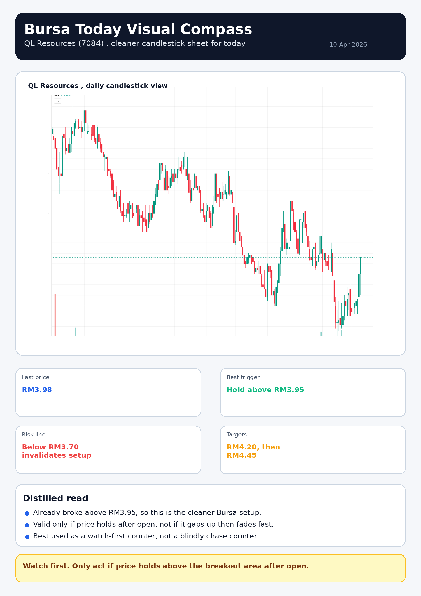
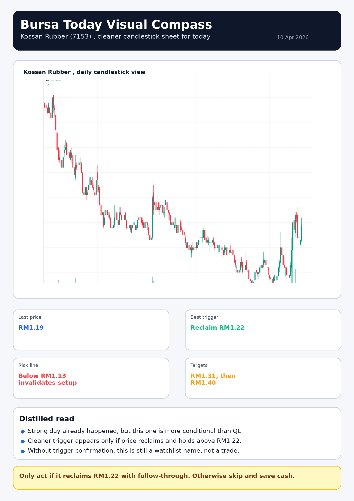

Wealth AGI by arifOS
Deep Research Morning Brief,
Global, Glocal, Civilizational
A pre-market research deck built for humans first. Not just what the market is doing, but what kind of world the market is moving through, what that means for scarce capital, and what is actually worth attention on Bursa Malaysia this morning.
Executive bottom line
- Today is a selective day, not a broad hunting day.
- Global mood is relief-driven, but trust is incomplete.
- Bursa setup quality is narrow, not abundant.
- If the clean setups fail, the right answer is no trade.
Only Bursa counters worth attention now
- QL Resources, cleaner setup
- Kossan Rubber, conditional setup
- If neither confirms, stand down
Truth and survival must stay in equilibrium. In markets, that means respecting reality more than hope, and respecting capital more than ego.
Section 1
The world before the open
Macro, behavior, and the civilizational forces currently shaping market tone.
Global sentiment
Relief, not trust
Risk appetite returned partially, but conviction remains thin.
Market regime
Selective
Good names can work, but broad chasing is still dangerous.
Capital doctrine
Protect first
Scarce capital cannot subsidize mediocre setups.
Global read
US risk appetite improved, but Asia did not fully confirm. Oil stayed supported enough to keep macro participants alert. The dollar softened broadly, but local currency caution remained relevant. Gold did not fully collapse, which means defensive reflexes are reduced, not erased.
This is a market willing to buy, but not willing to fully believe. That matters, because in this kind of environment, timing becomes more important than narrative confidence.
Civilizational read
Today’s tape reflects a civilization-state of partial strain but ongoing coordination. Energy still matters, liquidity is selective, trust is incomplete, and quality is preferred over fantasy. That means markets are rewarding realism, selectivity, and optionality more than broad optimism.
In plain language, the system is still functioning, but it is not forgiving stupidity.
The AGI market compass
| Compass | Question | Today’s read |
|---|
| Regime | What kind of market world are we in? | Fragile rebound, selective participation, headline sensitivity. |
| Liquidity | Is fuel broad or narrow? | Narrow enough to demand strict filtering. |
| Positioning | Who is trapped, crowded, or under-owned? | Mixed, with selective rebound opportunities, not a wide clean field. |
| Breadth | Is the move broad or decorative? | Likely thinner than ideal, especially for Bursa. |
| Catalyst | What can actually reprice names? | Technical breakouts, macro headlines, and open confirmation or rejection. |
| Structure | What is price accepting or rejecting? | Only setups with visible hold, trigger, and invalidation deserve action. |
Section 2
Glocal allocation logic
Why the right trade is relative to the quality of available alternatives.
Poor-capital optimization
- Do not allocate scarce money to low-quality action just to feel productive.
- A mediocre trade is not superior to no trade.
- Every local opportunity must compete against safer or structurally stronger alternatives.
- No trade is a valid position when the board is low quality.
The alternatives that matter
- ASB, when safety and low friction dominate.
- US markets, when structural quality and liquidity are better.
- Oil, when macro expression is cleaner there.
- Gold, when systemic uncertainty matters more than growth appetite.
Key truth: Money is always relative to time, opportunity cost, and survival horizon. For constrained capital, patriotic attachment to weak setups is expensive. The right comparison is not “can Bursa move?” but “is Bursa the best use of capital today?”

QL Resources, cleaner setup, already above breakout area.

Kossan Rubber, improved structure, but still needs trigger confirmation.
Section 3
Bursa Malaysia, the only names worth attention
Strict filter result. If these do not confirm, the correct answer is to do less.
Priority 1
QL Resources (7084)
Cleaner setup
- Already broke above RM3.95
- Last visible reference around RM3.98
- Best only if it holds after open
- Invalidation below RM3.70
- Upside references RM4.20 then RM4.45
Priority 2
Kossan Rubber (7153)
Conditional setup
- Recent strength improved structure
- Cleaner trigger only above RM1.22
- Last visible reference around RM1.19
- Invalidation below RM1.13
- Upside references RM1.31 then RM1.40
What not to do
Do not chase random top-volume noise. Do not confuse a stable index with healthy breadth. Do not overtrade because the market is open. Do not average down blindly because the story sounds nice. This is how small capital gets ground down.
Decision tree at the open
If QL holds above breakout and Kossan reclaims trigger, selective action is justified. If both hesitate and breadth remains weak, reduce aggression and wait. If both fail, stand down completely. No trade is the correct answer when quality is absent.
Final verdict
Today is a selective Bursa day, not a broad opportunity day. QL is the cleanest setup, Kossan is conditional, and no trade remains a valid high-intelligence position. Truth without survival is sterile. Survival without truth becomes delusion. The correct market posture is equilibrium.
Wealth AGI by arifOS. Built from the full context of this session: market sentiment, Bursa setup filtering, civilizational force mapping, trading-indicator critique, and resource-optimization logic.